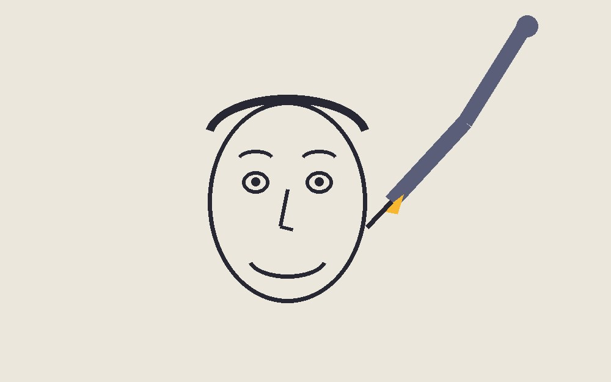
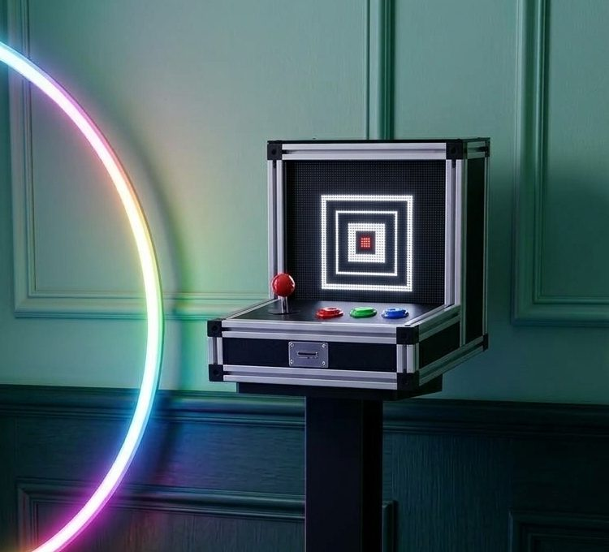

Face Art
Un robot vous photographie, puis dessine votre portrait sous vos yeux.

L’animation
Un dispositif robotique doté d’une intelligence artificielle : la photo est transformée en croquis, puis le bras trace le portrait au feutre, sur papier. Chaque invité repart avec le sien.
Salon, inauguration, soirée : l’animation qui fait s’arrêter les passants et laisse un objet.
En trois étapes
On s’installe face à l’appareil : une photo.
L’IA transforme la photo en croquis.
Le bras robotisé dessine, on regarde, on repart avec le papier.
Autres animations

Photo Émotion
La borne photo qui se déclenche sur vos émotions.
Voir l’animation →
Modules Pixel
Au repos, les matrices habillent l’espace. Dès qu’on s’approche, elles se jouent.
Voir l’animation →
Sign
En deux minutes, vos invités apprennent à épeler un mot en langue des signes française, guidés par une intelligence artificielle.
Voir l’animation →Face Art pour votre événement ?
Donnez-nous la date, le lieu et le nombre d’invités : nous vous répondons avec une formule et un devis détaillé.